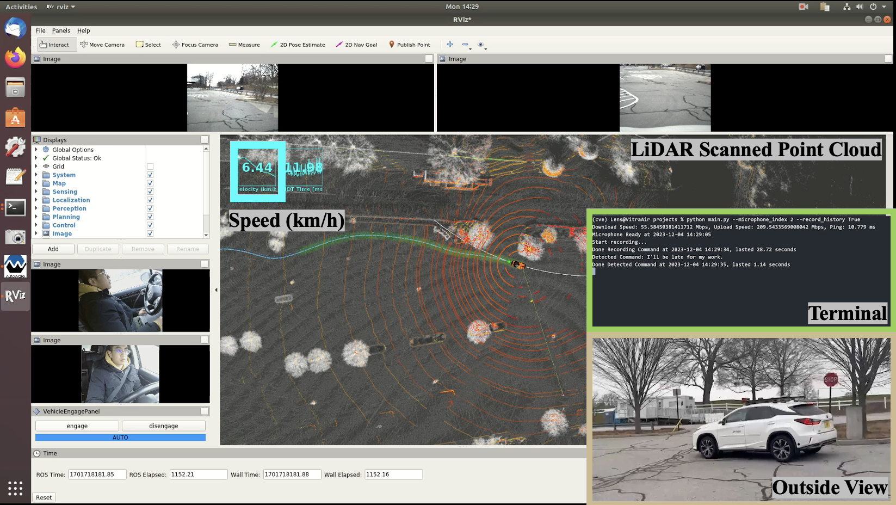
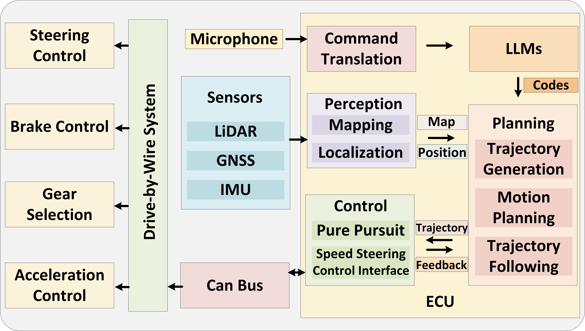

Large Language Models for Autonomous Driving: Real-World Experiments
Can Cui, Zichong Yang, Yupeng Zhou, Yunsheng Ma, Juanwu Lu, Lingxi Li, Yaobin Chen,
Jitesh H. Panchal and Ziran Wang
Talk2Drive Framework is the first successful implementation of an LLM-based autonomous driving
system in a real-world vehicle. This approach aims to overcome several key challenges faced by
traditional autonomous driving systems.
Key Features:
1. It transforms verbal commands from humans into textual instructions, which are then processed
by LLMs in the cloud.
2. LLMs generate specific driving codes that are executed by the autonomous vehicle, adjusting
driving behaviors and control parameters to align with the human preferences.
3. A memory module in the vehicle stores all human-vehicle interaction data, ensuring each
driving experience is personalized based on the human’s historical preferences and commands.

 Talk2Drive framework
architecture.
A human's spoken instructions are processed by cloud-based LLMs,
which synthesize contextual data C from weather, traffic conditions, and local traffic rules
information.
The LLMs generate executable codes P that are communicated to the vehicle's Electronic Control
Unit (ECU).
These codes operate the actuation of vehicle controls, ensuring that the human's intent is
translated into safe
and personalized driving actions. A memory module archives every command I, its resultant codes
P, and
subsequent user feedback F, ensuring continuous refinement of the personalized driving
experience.
Talk2Drive framework
architecture.
A human's spoken instructions are processed by cloud-based LLMs,
which synthesize contextual data C from weather, traffic conditions, and local traffic rules
information.
The LLMs generate executable codes P that are communicated to the vehicle's Electronic Control
Unit (ECU).
These codes operate the actuation of vehicle controls, ensuring that the human's intent is
translated into safe
and personalized driving actions. A memory module archives every command I, its resultant codes
P, and
subsequent user feedback F, ensuring continuous refinement of the personalized driving
experience.
Autonomous driving function modules and message flow
The initial step in the Talk2Drive framework involves directly receiving arbitrary verbal commands from humans. Utilizing cutting-edge voice recognition technology, specifically the open-source API Whisper, these verbal commands are accurately captured and then translated into textual instructions (I).The LLMs then generate corresponding codes (P) based on this interpretation.The generated codes P are sent back from the cloud to the vehicle's Electronic Control Unit (ECU), where they are executed. The code execution involves adjusting basic driving behaviors and various parameters in the vehicle’s planning and control systems. After ECU executes these codes, the vehicle's actuators control the throttle, brakes, gear selection, and steering to realize the driving behavior specified by the LLM-generated codes through the CAN bus and drive-by-wire system.
Vehicle Setup
Sensors
- One VLP-32C Lidar.
- Two mako G-319C Cameras.
- Two Logitech C920s In-Cabin Cameras.
- Cradlepoint IBR900 Series Router with AT&T Sim Card.
Spectra ECU
- Intel I9-9900 9th Gen 3.10/5.0GHz Hexa- core 65W Processor .
- NVIDIA Quadro RTX-A4000 16GB GDDR6 140W GPU.
- 512GB SSD.
Localization:
3D-NDT Mapping
Demos
Talk2Drive Framework on Highway
Talk2Drive Framework on Intersection
Talk2Drive Framework on Parking Lot
 |
 |
 |
 |
 |
| Can Cui Purdue University |
Zichong Yang Purdue University |
Yupeng Zhou Purdue UNiversity |
Yunsheng Ma Purdue University |
Juanwu Lu Purdue University |
 |
||||
| Lingxi Li IUPUI |
Yaobin Chen IUPUI |
Jitesh H. Panchal Purdue University |
Ziran Wang Purdue University |
- © Purdue Digital Twin Lab
- Lab Website: purduedigitaltwin.github.io